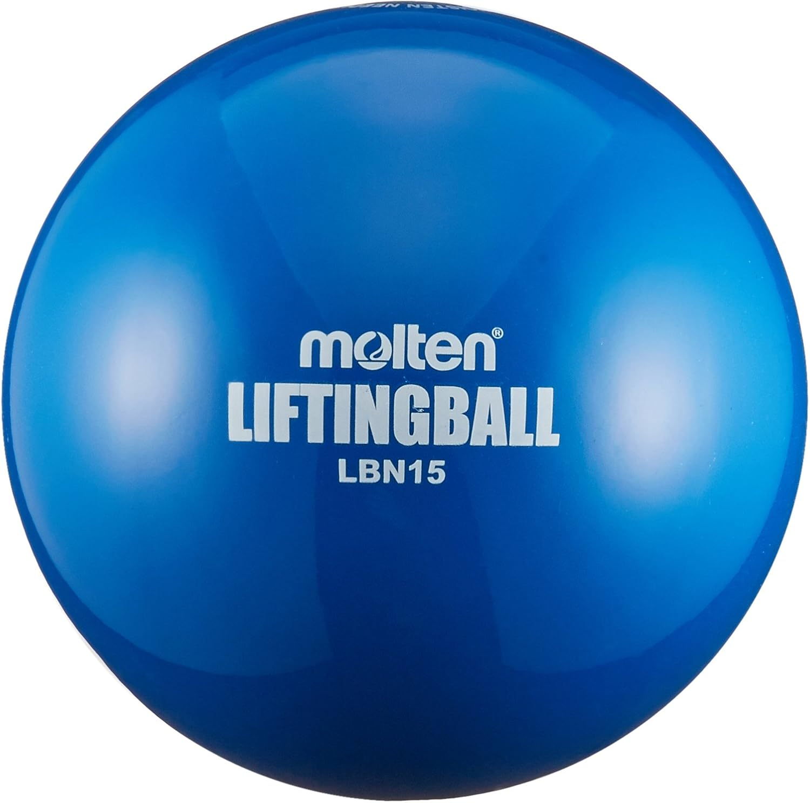

お子さんのサッカー上達のブレーキは『練習量』じゃありません。
『どのボールで練習するか』、これだけです。
普通のサッカーボールで30分蹴るより、
ゴムボール（Amazon ¥2,725）で10分タッチする方が、3倍上達します。
理由は脳の仕組み。
普通のボール = 脳は『いつもの動き』を再生するだけ
ゴムボール = 予測できない動きで、脳が『新しい動き』を試行錯誤する
これが神経科学の『予測誤差学習』です。
検索ワードは『モルテン リフティングボール LBN15』。
明日からお子さんに渡せば、30日後には別人みたいなボールタッチになります。
他の上達法10本は固定ポストにまとめてあります。

💬 0
🔁 0
♡ 0
📊 0
🕐 投稿後30分以内に自己リプ
ちなみに、僕の生徒もこのゴムボール（LBN15）3年使い倒してます。
（うちでも常時2個ストック）
商品はこちら↓
https://amzn.to/42giqSO
実はもう1つ、慣れてきた人向けの重めのボール（LBH18）もありますが、それは次の投稿で。
💬 0
🔁 0
♡ 0
📊 0